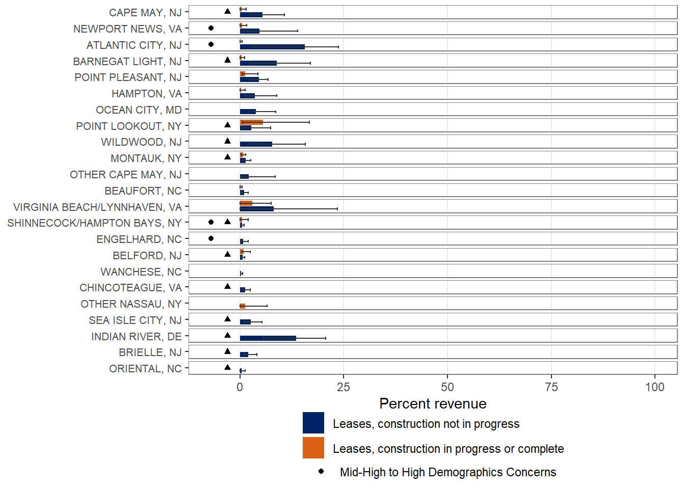
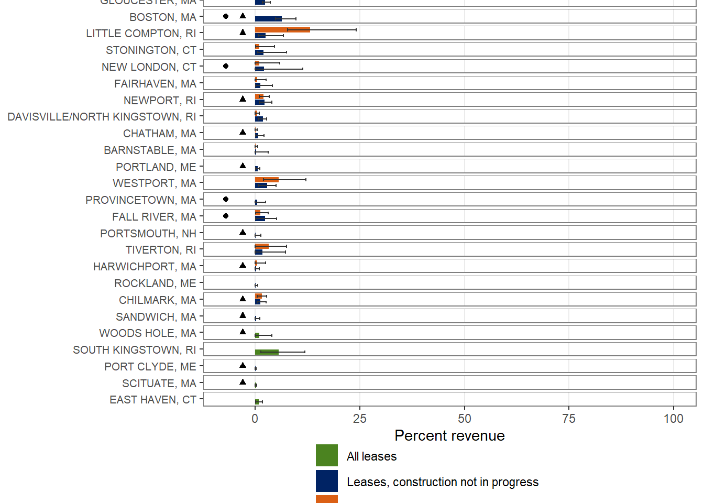

83 Community Port Landings and Revenue from Wind Energy Areas (WEAs)
Description: Percent of port-level revenue from wind lease areas and Community Social Vulnerability Indicators
Indicator family:
Contributor(s): Angela Silva, Doug Christel, Benjamin Galuardi, Nicole Morgan, Bobby Murphy, Abigail Tyrell
Affiliations: NEFSC
83.1 Introduction to Indicator
This indicator describes fishing revenue that can be attributed to areas leased for offshore wind development. The fishing footprint model ([116], [117]) is used to allocate trip-level revenue to wind lease areas. These trips are aggregated by port to determine the port-level revenue derived from wind lease areas. Further information is available on the NOAA website. For this indicator, wind lease areas are assessed as two groups, leases under construction or fully developed, and leases where construction has not yet begun. This distinction has been added to better illustrate which ports may be subject to potential near-term impacts of offshore wind infrastructure.
83.2 Key Results and Visualizations
These figures display historic port revenue (2008-2024) from within all wind lease areas as a proportion of the port’s total fisheries revenue. Please refer to the technical documentation for this indicator for more detail on how wind lease areas were categorized. Revenue data is based on vessel trip reports as described in Benjamin et al. 2018 ([116]) and DePiper 2014 ([117]). The bars represent average percent revenue that each port derived from the wind lease areas. The error bars indicate the minimum and maximum percent revenue derived from the wind lease areas. Only ports with five or more years of revenue and an average revenue from the wind lease areas larger than $10,000 are displayed. Additionally, this analysis is based on non-confidential data and does not include years when port revenue from wind lease areas would be subject to confidentiality restrictions; the number of years excluded for confidentiality reasons varies by port. Years with no income from the wind lease areas have also been excluded from this analysis; only five ports had years with no revenue in the wind lease areas.
The ports are sorted from greatest to least maximum fisheries revenue from within wind lease areas. Those communities that score Med-High or higher in at least one of the indicators that address social vulnerability concerns (i.e., Poverty, Population Composition, Personal Disruption; see CSVI) are noted with a triangle. Gentrification pressure is also highlighted here, with those communities that score Med-High or higher in one or more gentrification pressure indicators (i.e., Housing Disruption, Retiree Migration, Urban Sprawl) represented with a circle.
Overall, most ports derive a small portion of their total revenue from wind lease areas. The majority of ports derive a smaller percentage of total revenue from lease areas that are already under construction or developed, compared to the lease areas that have not yet begun construction.
Mid Atlantic ports derive 0-17% of their revenue from wind lease areas that are under construction or fully developed. Point Lookout, NY is the only port that derives an average of >5% of its revenue from wind lease areas that are under construction or fully developed. The lease areas that have not yet been developed represent 0-24% of port revenue for Mid Atlantic ports. Indian River, DE, Atlantic City, NJ, Virginia Beach/Lynnhaven, VA, Barnegat Light, NJ, Wildwood, NJ, and Cape May, NJ are the ports that derive an average of >5% of their revenue from wind lease areas that are not currently under construction.
New England ports derive 0-24% of their revenue from wind lease areas that are under construction or fully developed. Little Compton, RI and Westport, MA are the only ports that derive an average of >5% of their revenue from wind lease areas that are under development or fully constructed. The lease areas that have not yet been developed represent 0-12% of port revenue for New England ports. Boston, MA is the only port that derives an average of >5% of its revenue from wind lease areas that are not currently under construction.
Additionally, there are 4 New England ports that meet the reporting criteria when revenue is assessed across all lease areas combined (fully developed or under construction, and construction not yet begun): South Kingstown, RI, Woods Hole, MA, Scituate, MA, and East Haven, CT. Due to confidentiality restrictions, we cannot distinguish whether this revenue is coming from lease areas where construction has already begun or if the revenue derives from regions that have not yet begun construction activities. South Kingstown, RI has the highest percentage of port revenue derived from wind lease areas at 1-12% (average 6%). The other ports have 0-4% of their revenue in the wind lease areas, with an average of ≤1% of their revenue from the wind lease areas.
The second set of figures shows ports where the majority of revenue within the wind lease areas was derived from species managed by the opposite regional Fisheries Management Council. The top figure shows the ports where the majority of the revenue within the wind lease areas that are under construction or operational is derived from species managed by the opposite region’s Council. The bottom figure shows ports where the majority of the revenue from all wind lease areas is derived from species managed by the opposite region’s Council. This analysis was conducted using only non-confidential revenues. This breakdown was produced in response to a request from the Councils to help them better understand the potential impacts of wind lease areas on Council-managed species.


83.3 Indicator statistics
Spatial scale: Full Shelf, broken down into Mid-Atlantic and New England communities
Temporal scale: 2008-2024
Synthesis Theme:
83.4 Implications
BOEM reports that cumulative offshore wind development (if all proposed projects are developed) could have moderate impacts on low-income members of socially vulnerable communities who work in the commercial fishing and for-hire fishing industry due to disruptions to fish populations, restrictions on navigation and increased vessel traffic as well as existing vulnerabilities of low-income workers to economic impacts [118]. Impacts of offshore wind development may unevenly affect individual operators, with permit-based revenue being much higher than the port-based mean for some permit holders.
Offshore wind presents a new use of the ocean which is a permanent long term change compared to other stressors faced by the fishing industry that are mostly cyclical or temporary in nature (e.g., stock changes, temporary closures). The most immediate effect of offshore wind energy development is the loss of access to fishing grounds, which forces fishermen to adapt their decisions and businesses as a result of displacement of fishing effort. Displacement of effort often reduces profitability with increased fuel and labor costs or reduced catch per unit effort (CPUE) as new grounds may be less productive or see an increase in crowding. The heightened uncertainty around offshore wind may discourage new entrants or marginalize small-scale fisheries and communities which are often less resilient to displacement. The cascade of socioeconomic stressors can extend from the individual vessel operations to the supply chain, seafood support businesses, and the broader coastal communities. Applying standardized monitoring plans and methodologies would help identify realized impacts as the first projects undergo construction and operation.
83.5 Get the data
Point of contact: Abby Tyrell (abigail.tyrell@noaa.gov)
ecodata name: ecodata::wind_port
Variable definitions
perc_MIN: minimum percent of port revenue derived from wind lease areas perc_MAX: maximum percent of port revenue derived from wind lease areas perc_AVG: average percent of port revenue derived from wind lease areas MaxVal: maximum amount of revenue derived from wind lease areas (2024$) EJ: 1 = community scored Med-High or higher in at least one of the vulnerability indicators that address social vulnerability concerns (i.e., Poverty, Population Composition, Personal Disruption); 0 = community did not score Med-High or higher in at least one of the vulnerability indicators that address social vulnerability concerns Gentrification: 1 = community scored Med-High or higher in one or more gentrification pressure indicators (i.e., Housing Disruption, Retiree Migration, Urban Sprawl); 0 = community did not score Med-High or higher in one or more gentrification pressure indicators lease_status: 3 categories, whether the leases areas assessed were “All leases”, “Leases, construction not in progress”, or “Leases, construction in progress or complete”
Indicator Category:
83.7 Accessibility and Constraints
No response
tech-doc link https://noaa-edab.github.io/tech-doc/wind_port.html